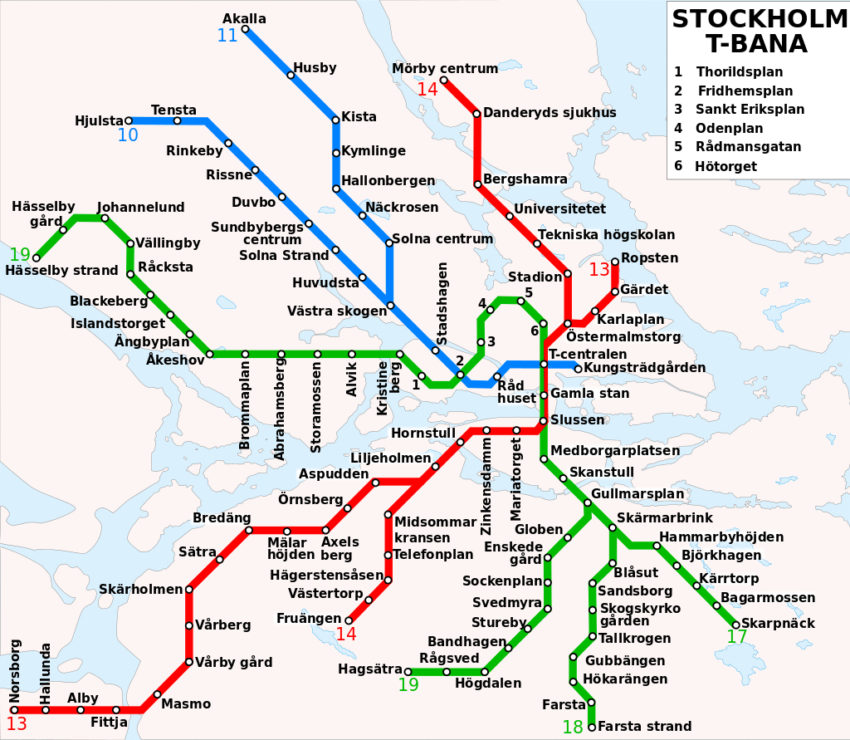

09:00
Municipio (Stadshuset)
Sala Blu dei Premi Nobel e Sala Oro vettoriale.
Pillola del Giorno (Trascina per chiudere)
"LAGOM ÄR BÄST" – La giusta misura è la cosa migliore.

Gita a Stoccolma
Martedì
25.08.2026
Programma di Oggi
Percepita 20°
Sala Blu dei Premi Nobel e Sala Oro vettoriale.

Centro storico medievale, vicoli e Palazzo Reale.

Navigazione panoramica al tramonto.
Trasporti Stoccolma

Cambio Rapido
Importo Convertito
100 Kronor Svedesi (SEK)
Seleziona Corone (SEK):
Invia subito la tua posizione GPS aggiornata via WhatsApp ai docenti accompagnatori.